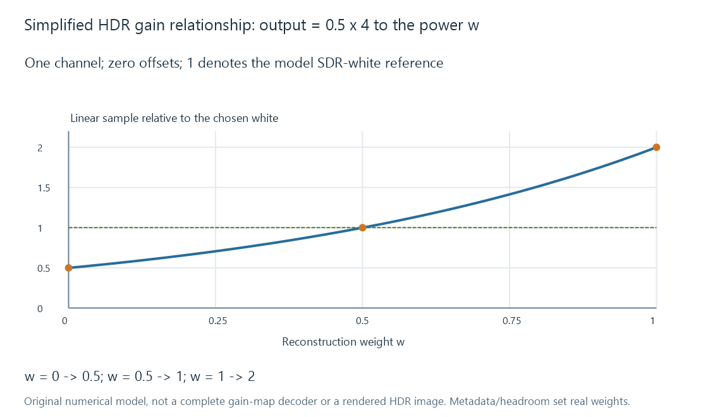

HDR still images
An HDR still presentation combines suitable image samples and luminance/colour interpretation with an output path that can render the intended brightness range or a defined fallback.
An HDR photograph can represent and present brightness relationships beyond a chosen SDR reproduction. Its meaningful properties include the samples, their colour/luminance interpretation and how the output path renders them.
Capturing a wide range of scene light and storing a finished HDR presentation are different tasks. A raw capture or a high-precision TIFF can supply useful information without being a directly displayable HDR image.
Capture and presentation make different decisions
A raw development or a merge of bracketed exposures can recover scene information across a range of light levels. The photographer still chooses exposure, appearance and an output representation.
An SDR export maps that result into an SDR reproduction. An HDR export can retain another brightness relationship using a suitable encoding or gain-map arrangement.
Increasing bit depth supplies more numerical levels. It does not identify which values mean SDR white, HDR highlights or a particular transfer function.
Two useful representation routes
A directly interpreted HDR image uses appropriate sample encoding and colour/luminance description. Its reader needs to decode and interpret that representation, then render for the actual output.
A gain-map arrangement relates a base rendition to another appearance using an additional spatial map and metadata. A compatible consumer can combine them according to the supported reconstruction and available output headroom. A base-only consumer can receive the designated base presentation when that arrangement permits it.
Android's Ultra HDR v1.1 reference specifies one JPEG-based gain-map packaging. Adobe's resources describe its gain-map design and the ISO 21496-1 standardization relationship. These are concrete arrangements, rather than a guarantee that every file called HDR stores the same fields.
A gain is a relationship between renditions
For an original, simplified one-channel, zero-offset model, let base linear sample B = 0.5, full gain G = 4, and reconstruction weight w between 0 and 1:
output = B × Gʷ.
| Weight w | Calculation | Linear result |
|---|---|---|
| 0 | 0.5 × 4⁰ | 0.5 |
| 0.5 | 0.5 × 4⁰·⁵ | 1 |
| 1 | 0.5 × 4¹ | 2 |
Here, 1 denotes the model's chosen SDR-white reference. The reconstructed highlight can rise above it as more of the gain is applied.

Real specified gain maps define how map samples, metadata, offsets, channels and display capacity determine the operation. This table illustrates the multiplicative relationship; it is not a complete gain-map decoder, and w is not a claim about a particular display's brightness setting.
Thumbnail generation can choose a different rendition
An image converter that reads only a designated SDR base may produce a useful SDR thumbnail while omitting the map. A later HDR-capable viewer cannot reconstruct the lost source relationship from that derivative alone.
Another converter can reconstruct the HDR appearance, then intentionally create an SDR result through tone mapping. Simply clipping every value above 1 merges distinct highlights into one level; HDR-to-SDR tone mapping develops the alternative mapping.
Cropping/resizing also needs a coherent relationship between the image and any spatial auxiliary map. Carrying an unchanged map alongside differently cropped base samples can make their positions disagree.
Output headroom belongs to the full route
The app's decoding, colour handling, operating-system surface and display presentation all contribute to the observed result. A display with HDR capability does not cause an image decoder to recover missing gain-map data or automatically repair wrong colour signaling.
For Emby photos/artwork, compare the selected original, delivered representation and final appearance. Determine whether that route preserved the intended HDR information, chose an SDR derivative, or lost part of the relationship during conversion.
A sound SDR fallback is another authored result, not necessarily evidence of a failed capture. It should retain useful scene relationships for its intended output rather than rely on a filename or bit-depth label to communicate the whole presentation.
See Also
- AVIF images
- HEIF and HEIC images
- PNG images
- ICC color profiles
- Camera raw images
- How HDR-to-SDR Tone Mapping Works